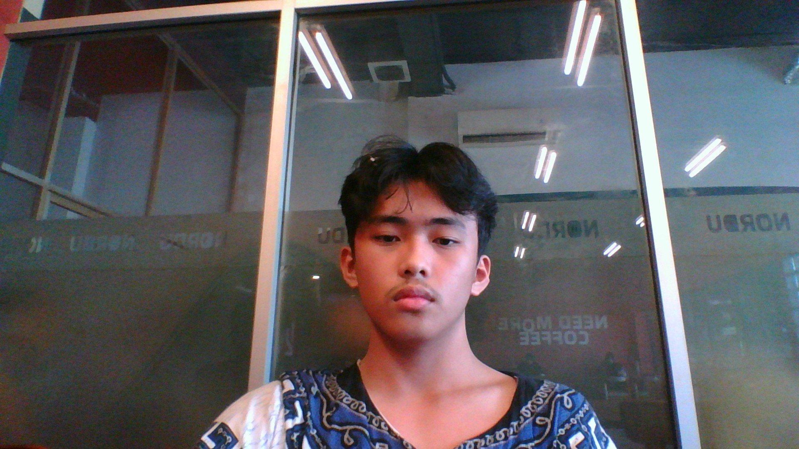

BARUWebsite Portofolio
Ini adalah proyek website saya yang menggunakan HTML dan CSS.
Halo! Saya adalah seorang siswa yang memiliki ketertarikan besar terhadap dunia teknologi. Saya senang mempelajari hal-hal baru, terutama yang berhubungan dengan komputer, jaringan, programming, dan perkembangan teknologi digital. Bagi saya, teknologi merupakan sesuatu yang menarik karena dapat membantu manusia menyelesaikan berbagai masalah dalam kehidupan sehari-hari.
Saat ini saya sedang mempelajari dasar-dasar pemrograman, khususnya HTML dan CSS. Saya mulai belajar bagaimana membuat struktur sebuah website, mengatur tampilannya, menggunakan berbagai selector, serta memahami fungsi setiap elemen yang digunakan. Walaupun masih dalam tahap belajar, saya ingin terus mengembangkan kemampuan saya agar suatu hari nanti dapat membuat website sendiri.
Selain web development, saya juga tertarik dengan bidang IT Network atau jaringan komputer. Saya ingin memahami bagaimana perangkat dapat saling terhubung, bagaimana internet bekerja, serta bagaimana cara membangun dan mengelola sebuah jaringan. Menurut saya, bidang jaringan komputer memiliki peran penting dalam perkembangan teknologi modern.
Saya juga memiliki rasa ingin tahu terhadap bidang Cyber Security. Saya tertarik mempelajari bagaimana sistem komputer dan jaringan dapat dilindungi dari berbagai ancaman digital. Saya ingin memahami cara kerja keamanan jaringan, mengenali kerentanan sistem, serta mempelajari bagaimana teknologi dapat digunakan secara aman dan bertanggung jawab.
Dalam proses belajar, saya menyadari bahwa memahami teknologi membutuhkan waktu, latihan, dan kesabaran. Terkadang saya menemukan kesulitan ketika mempelajari sesuatu yang baru, tetapi saya berusaha mengatasinya dengan mencari informasi, mencoba secara langsung, dan memahami kesalahan yang saya lakukan. Saya percaya bahwa setiap kesalahan merupakan bagian dari proses untuk menjadi lebih baik.
Di luar kegiatan belajar, saya juga senang mengeksplorasi berbagai hal yang berkaitan dengan komputer, game, musik, dan teknologi digital. Saya menikmati kesempatan untuk mencoba sesuatu yang belum pernah saya pelajari sebelumnya. Berbagai pengalaman tersebut membantu saya menemukan minat baru dan membuat saya semakin termotivasi untuk terus berkembang.
Ke depannya, saya berharap dapat menjadi seseorang yang memiliki kemampuan dan pengetahuan luas dalam bidang teknologi informasi. Saya ingin terus belajar, mengembangkan berbagai proyek, serta meningkatkan kemampuan programming dan networking. Saya percaya bahwa dengan konsistensi, kerja keras, dan kemauan untuk belajar, saya dapat mencapai tujuan yang saya inginkan.